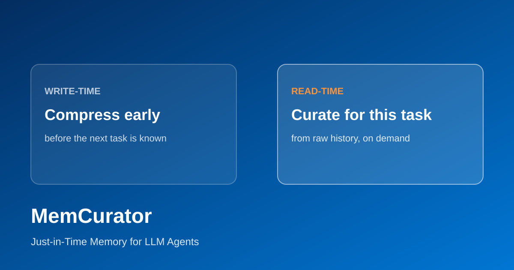

Efficiency of On-Policy Distillation
Making on-policy distillation cheaper and faster while preserving teacher quality and student gains.
We study agents that improve from their own experience — memory, language feedback, and policy updates that accumulate over time. The goal is self-improvement; distillation is the means.
The model weights stay frozen. What changes is the experience the agent carries: each attempt is checked, curated into memory, gated for what generalizes, and reused on the next task. That loop is test-time evolution — improvement without retraining.
Scrub the timeline across tasks: trajectory bank, memory curator, success-rate charts, and a fail→success case study. Full page: memcurator.html.
Papers on self-improving agents, newest first.

Making on-policy distillation cheaper and faster while preserving teacher quality and student gains.
Next-generation procedural memory distillation with richer memory abstractions and stronger co-evolution.
How reinforcement learning, supervised fine-tuning, and on-policy distillation interact — and when to combine them.

Just-in-Time Memory for LLM Agents
Keeps past experience whole and curates a short, task-adaptive briefing at read time — when the next task is known — instead of compressing memory too early.

Recursive Improvement via Self-Extrapolating Policy Distillation
Builds a synthetic future teacher from the model’s own RLVR trajectory via self-extrapolation, then distills dense token-level targets — no external teacher required.

Learning Generalizable Behaviors for Terminal Agents
Filters noisy synthetic terminal environments and shapes rewards so RL reinforces transferable multi-turn behaviors — using <30% of TMax data for larger gains.

Procedural Memory Distillation: Online Reflection for Self-Improving Language Models
Converts cross-episode signals into reusable procedural memory and distills it into the policy’s weights during training. Memory is a training scaffold, so inference is memory-free.

Learning from Language Feedback via Variational Policy Distillation
Reframes on-policy self-distillation as variational EM: the teacher is refined on trajectory outcomes, then distilled into the student’s rollouts, with a dynamic trust region inside a shared-weight network.